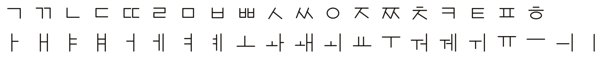

sebul (기기 글꼴 기반)
제목
광화문 광장
본문
닭을 밟고 흙을 긁다
font-kku의 기본 경로는 기기에 이미 깔린 한글 글꼴을 재료로 쓰는 것이고(sebul·gothic),
이 페이지가 다루는 그림 자소(sprite)는 확장 경로다. 자음 19 + 모음 21, 40칸만 그리면
한글 전체가 만들어지므로 글꼴 제작 도구 없이 웹·앱에서 바로 자기 손글씨를 글꼴처럼 쓸 수 있고,
한글 글꼴이 깔려 있지 않은 기기에서도 웹 글꼴 없이 같은 모양으로 그려진다.
손글씨·픽셀·스티커·컬러처럼 글꼴로는 표현할 수 없는 형태도 그대로 쓴다.
구현은 profiles/sprite-example.css가 한 장의 PNG에 있는 자음·모음 그림을
data-sprite-jamo와 --fy-sprite-jamo-index 기반으로 자소 자리에 꽂는 방식이다.
예를 들어 광은 자소판에서 ㄱ, ㅗ, ㅏ, ㅇ 칸을 각각 가져온다.
기본 40칸에 더해 선택 확장 행(종성 전용 형태, 통짜 겹받침)을 얹으면 품질을 더 끌어올릴 수 있다 —
아래 sprite-system이 그 도달점을 보여주는 실측 추출 예시다.
획 중심선으로 직접 그린 SVG 자소판. 자음 19 · 모음 21자를 칸 100×100 격자에 배치했다. 투명 배경, 자소 하나당 한 칸이고, 벡터라 어느 크기로 늘려도 브라우저가 다시 그려 선명하다.

생성: node scripts/build_jamo_svg.js --write --font sprite-example — 획 정의는 scripts/build_jamo_svg.js,
칸마다 자모가 놓일 자리 상자는 spec/sprite-layout.json. 손으로 그린 PNG 칸 이미지로 만들려면
python3 scripts/build_sprite.py --from-dir <dir>(아래 검증 입력 참고).
같은 획으로 그린 6행 SVG 자소판이다.
자음 19 · 모음 21에 종성 전용 형태 16(받침은 초성보다 납작·넓다)과
통짜 겹받침 11(ㄳ~ㅄ), 문맥 행 둘(가로 모음 위 초성, 키 큰 초성 옆 합자 모음)을 얹었고,
합자 모음(ㅘ…)은 통짜 칸을 그대로 쓴다 (--fy-vowel-depth: whole · --fy-coda-depth: whole).
칸은 음절 1em 상자를 그대로 축소한 사상이라 자모가 제 위치에 프리포지션되고,
자리 값은 실측 적합(잉크 IoU + 상자 직해)으로, 압축된 획 굵기는 filter 팽창으로 보상했다.
도트 · 도장 · 분필은 같은 획을 다른 재료로 그린 자소판이다.
생성: node scripts/build_jamo_svg.js --write(기본 제공 자소판 10종 — 획 뼈대 × 획 표현) — 적합 파이프라인은
scripts/glyph_fit.py · glyph_solve_slot_box.py · glyph_sprite_stroke.py.
글꼴 파일의 완성 음절에서 잘라 내는 길(scripts/extract_sprite_from_syllables.py)은 재배포가 허용된 글꼴(SIL OFL 등)에만 쓴다.
저장소에는 일부만 그린 그림 자소 검증 입력(tests/fixtures/sprite-partial)이 포함돼 있다.
이 경로는 자음 ㄱ과 모음 ㅏ PNG만 포함하므로, 스크립트가 빠진 자소 보고(missing-jamo report)와 투명 대체(transparent fallback)를 함께 다루는지를 항상 재현할 수 있다.
python3 scripts/build_sprite.py \ --from-dir tests/fixtures/sprite-partial \ --out tmp/sprite-partial.png \ --css-out tmp/sprite-partial.css \ --report-out tmp/sprite-partial.json \ --font-name sprite-partial \ --scale 1 --scale 2
마감 검증에서는 --fail-on-missing를 추가해 빠진 자소를 에러로 승격할 수 있다.
같은 배치 글꼴을 jamo-set으로 그리면 자소판 칸 대신 자모마다 인라인 SVG가 들어간다(ADR-013).
획은 글자 색(color)을 따르고, 자리가 눌려도 굵기가 그대로이며, 페이지 CSS로 자모마다 색·굵기·끝 모양을 바꾼다.
자모 세트는 코드로 등록한다 — 기본 글꼴은 profiles/<글꼴>.jamo.js 모듈이 있고, 새 세트는 FontKku.registerJamo로 바로 넣는다.
jamo-set="sprite-system")
jamo-set="demo-dots")
FontKku.registerJamo("demo-dots", {
"r0-ㄱ": "M8 12 H44 V30 Q44 54 12 65", // 칸 키 r<행>-<자모>, 좌표는 칸 0–100
"r1-ㅏ": ["M67 2 V86", "M67 39 H85"]
}, { stroke: 8, cap: "round" });
/* 페이지 CSS: 둥근 끝 + 0 길이 대시 = 점선 */
.vector-dots [part="vector"] { stroke-dasharray: 0 11; }
--fy-sprite-paint: mask를 주면 자소판을 그림이 아니라 마스크로 쓰고, 칠은
--fy-sprite-fill(기본은 글자 색)이 한다(ADR-014). 손으로 그린 PNG 자소판에도 자모마다 색·그라데이션·무늬를 줄 수 있다.
획 모양은 자소판 그대로라 굵기는 바꾸지 못한다 — 굵기까지 바꾸려면 벡터 자소를 쓴다.
.mask-tint { --fy-sprite-paint: mask; }
.mask-tint [part~="choseong"] { color: #e63946; }
.mask-tint [part~="jungseong"] { --fy-sprite-fill: linear-gradient(#2563eb, #22d3ee); }
.mask-tint [part~="jongseong"] { --fy-sprite-fill: repeating-linear-gradient(45deg, #16a34a 0 2px, #86efac 2px 4px); }
런타임이 각 자소 노드에 data-sprite-jamo, data-sprite-jamo-kind,
--fy-sprite-jamo-index(열)를 주입하고, 코어 CSS가 자소판을 칠한다.
글꼴은 자소판과 행 선택만 변수로 선언한다.
:where([data-fy-font="my-sprite"]) {
--fy-material: sprite;
--fy-sprite-url: url("./my-sprite.svg"); /* PNG도 된다 */
--fy-sprite-cols: 21;
--fy-sprite-rows: 2;
--fy-sprite-kinds: consonant vowel; /* 칸 없는 종류는 글자로 폴백 */
}
:where([data-fy-font="my-sprite"]) [data-sprite-jamo-kind="vowel"] {
--fy-sprite-row: 1; /* 자음은 0행(기본값) */
}
/* 선택 확장 행 (sprite-system 참고) — 3행: 종성 전용, 4행: 통짜 겹받침 */
[part~="jongseong"][data-sprite-jamo-kind="consonant"] { --fy-sprite-row: 2; }
[data-sprite-jamo-kind="coda-cluster"] { --fy-sprite-row: 3; }